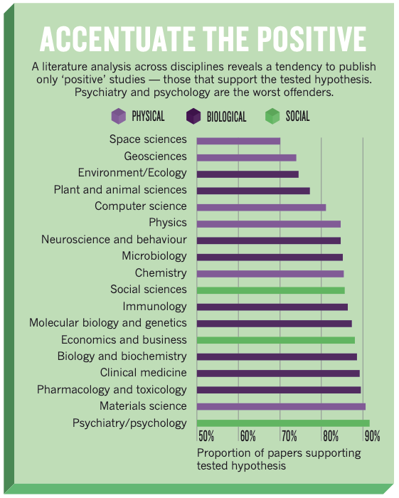

Lecture 5: Open Science
Preregistration and the lab report
Today’s lecture comes in two parts. In the first part of the lecture, we’ll discuss a few contemporary issues in psychological research, specifically around what’s known as the replication crisis and the open science movement that has emerged to address some of the shortcomings of how science is done. Some of the practices in the open science movement, particularly something known as pre-registration are the inspiration for the lab report that you’ll complete this term.
While the first part of the lecture will tell you about the motivation behind the lab report, the second part will cover some of the practicalities. Specifically, it will cover some of the details of exactly what is expected from you.
This style of lab report will probably be new for all of you. So if it looks like something you’ve never done before then don’t worry. You’re all in the same boat.
Some terminology
We’ll be using the terms replicability and reproducibility in this lecture. There isn’t a universal agreement on what these two terms mean, and sometimes people use them as synonyms. This is probably because both terms refer to cases where researchers try to obtain the same results as earlier researchers. To avoid any confusion, I’ll explain the usage that I think is most common in the literature and the way I’ll be using them in this lecture.
Reproducibility refers to getting the same results by using the same (statistical) methods on the same dataset. A study is reproducible if you can take the original data from an earlier study by different researchers and reproduce the numbers/statistics reported in the original journal article.
This might sound like it’s trivial, but it turns out that it isn’t! One of the reasons you’re learning R and Quarto in this course is so that you can learn how to do reproducible science.
Replicability refers to getting the same results by using the same methods on a new dataset that you collect. A study is replicable if you can repeat the study using the same methods (e.g., experimental design, analysis) to produce a new dataset that produces the same conclusions as the original study.
The replication crisis
Several large-scale studies in the early part of the last decade (see Open Science Collaboration, 2012, 2015) attempted to replicate some classic findings in the psychology literature. That is, researchers tried to run the studies again to see if they could produce the same results and conclusions as the original studies. This turned out to be spectacularly unsuccessful. Some estimates suggest that possibly 50% or more of these classic findings (the kind of findings that support the theories you read about in your textbooks) could not be replicated. This has prompted some to claim that psychology is in a state of crisis.
Identifying that the crisis exists, however, is only the first step. Several researchers have tried to understand the causes of this crisis. It’s probably the case that there isn’t a single cause of the replication crisis. Rather, there are likely several related causes that might be to blame.
These causes might include how statistics and statistical procedures are used and abused in psychology. Incentives in the publishing and university system that might favour flashy findings above methodological rigour. And the lack of clearly defined theories in psychological science. That is, theories that make unambiguous predictions about what should happen in experiments (see Lecture 2).
When we designed the psychology methods courses at Sussex, many of these issues were at the forefront of our minds. I won’t be able to go into all of these possible causes in detail in this lecture, so instead, I’ll try and pull out some of the issues that were most relevant to our thinking about the lab report.
Bias in Publishing
If we look specifically at the published literature in psychology we’ll notice something odd. The vast majority of published papers in psychology journals report findings that support the tested hypotheses (see Figure 1).
But how is this possible? It could be psychology researchers as psychic, and they only test hypotheses that turn out to be true. Or it could be that the hypotheses they test are trivial. But remember in Lecture 2, I said that theories in psychology often make probabilistic claims, so even if they are true then we might not expect every experiment that tests a specific theory to show evidence for that theory. Rather, it seems plausible that there may be some sort of bias in the kinds of papers that get published.
One source of bias in the publishing of psychology studies that people have argued exists is that journal editors and peer reviewers might not want to publish studies when they don’t like the results. They might not like the results for a variety of reasons, but one, in particular, might be that if studies don’t show support for the tested hypothesis then reviewers might believe that the results are less reliable. And this belief might be particularly strong in cases where new studies fail to find support for famous or influential theories.
If a new study doesn’t find support for a famous or influential theory then editors/reviewers might be more likely to suspect there’s some kind of problem with the new study, and they might choose not to publish it.
Bias might also happen at the level of the researcher in deciding what to submit for publication in the first place. For example, if a researcher fails to find support for the theory they’ve tested then they might not even try to have it published at all.
Bias in statistical procedures
In addition to bias in publishing, there are also certain practices that researchers can engage in that can invalidate the results of their studies. These practices are collectively known as questionable research practices or QPRs. One group of QPRs, known as p-hacking can make it so that researchers are more likely to find statistical results that support the tested hypothesis even if the tested hypothesis is not true. Some of these practices are very subtle and may occur without researchers deliberately trying to engage in any form of malpractice. One such practice can occur when researchers repeatedly run their statistical tests after adding more and more participants to their sample.
We’ll learn more about the theory that explains the problems with this practice in later lectures, but for now, it will probably be easier to explain by way of an example. Let’s say you have a theory that says that people from West Sussex are taller than people from East Sussex. But let’s also say that theory isn’t true. However, you decide to test it by measuring a random group of 10 people from West Sussex and a random group of 10 people from East Sussex. The heights of these people won’t be exactly the same, so you might find that the East Sussex people are slightly taller. If you added another random group of 20 people, the heights of these people will again not be identical. As a result, you might find that the West Sussex people are now slightly taller. But you might equally find the opposite.
Whether you find that West Sussex people are taller or East Sussex people are taller is just due to random variation in your sample. That is, because of this random variation, even though West Sussex people aren’t taller, you’ll sometimes find that they are. And you’ll sometimes find that people from East Sussex are taller. If you decide to continue adding more people to your study and checking the results after each batch of people, then you can just decide to stop your study whenever your results happen to show what you want. And it can be easy for you, as a researcher, to justify this to yourself by simply saying that before the point where you decided to stop, you simply hadn’t measured enough people for your sample to be representative.
But if there is bias in what studies get published, and if it can be easy for researchers to engage in practices that invalidate their statistical procedures, then what is the solution? One proposed solution is pre-registration.
Pre-registration in the media
The idea of pre-registration has been covered in popular media. For example, it’s been written about in The Guardian on several occasions. Some examples include:
Pre-registration and combating bias
Preregistration means that before conducting a study, researchers plan their study in detail. This involves specifying the theory they plan to test and specifying all their hypotheses. They also specify details such as the number of participants they intend to sample, and the statistical procedures that they intend to use. Additionally, this plan is made publicly accessible in some way so that there is a record of what the researcher intended to do.
By doing this, preregistration might improve the reliability of published research by combating certain kinds of researcher bias, such as the example of p-hacking outlined above. Additionally, because the hypotheses are specified before the data are collected, this also means that researchers can’t change their hypotheses to make them fit whatever their data happened to show (think about falsification and infinitely flexible theories from Lecture 2). All this helps to ensure that the results of studies are more reliable.
Preregistration can also help combat bias at the publishing stage. Because researchers outline their plans in detail, peer reviewers and journal editors can judge whether the methods are scientifically rigorous and whether the study is likely to produce reliable results. And, importantly, they can make these decisions before seeing the results of a study.
In a special form of preregistration, known as a registered report, editors and reviewers can accept studies for publication before the data are collected. This can happen because the detailed research plans allow editors and reviewers to judge whether the study will be scientifically sound before the results are known. And they can make these decisions without being influenced by the actual results.
Registered reports in action
To see an example of a registered report in action, we’ll take a look at a study by Colling et al. (2020). Our story starts with a paper published by Fischer et al. (2003). In this, they reported a study that claimed to show that merely looking at numbers would cause a shift in attention to either the left or the right side of space depending on whether the number was big (6-10) or small (1-4).
The exact details of the study and the theories that the data was used to support aren’t vitally important for our purposes. The key point, however, was that this finding was very influential, with more than 700 subsequent studies citing this finding or building on this work. Because this finding was influential, it’s not surprising that some researchers tried to replicate it. That is, they tried to run a study using the same methods as the original experiment to see if they could get the same results. Most of these studies were successful—that is, they found results that were broadly in agreement with what Fischer et al. (2003) had shown. A few published studies failed to replicate it, but these were in the minority.
But is the finding true? Does merely looking at numbers cause you to shift your attention to the left or the right? If you looked just at the published studies you would certainly have reason to believe that it is true. But if you spoke to people at scientific conferences then many researchers would tell you that they couldn’t successfully replicate it. This just wasn’t reflected in the scientific literature. But how did it come to be like this?
Knowing exactly how it came to be like this is difficult (probably impossible) to know. But possible reasons might be that the original finding was published in an extremely prestigious journal (Nature Neuroscience), and that it quickly became a very influential finding. This means that it probably got accepted as something like an established fact.
Once a finding is accepted as something like an established fact then journal editors and reviewers might be reluctant to publish studies that don’t support the original finding. This is not totally surprising. If something is an established fact, and a new study comes along trying to overturn it then what is more likely? That the established fact is wrong? Or that there’s something wrong with the new study?
For example, let’s say that I ran a study that showed that gravity didn’t exist. What is more likely, that gravity doesn’t exist or that there is a problem with my study. It’s reasonable to conclude that there is a problem with my study. But with other theories, it might be the case that the established theory is wrong. The best way to decide this is to try to judge the study on its methods rather than being influenced by what the study found. A registered report makes this possible.
With a registered report, you actually submit your research plan to a journal before you run the study. The journal reviews the plan and agrees to publish the study when it’s done, provided that you do the study exactly how you said you would.
Knowing whether the findings by Fischer et al. (2003) were true or not was something I was curious about. As mentioned, there was this disconnect between what people said at conferences and what you could read in journals. So I decided to put together a registered report where I would attempt to replicate the study by Fischer et al. (2003) (I also added in a few extra tasks, so that if I could replicate it then I would also be able to get a better idea of the exact mechanisms that are responsible for the effect).
The plan that I put together contained a lot of detail. It specified exactly who would be recruited to take part as participants. It specified exactly how the data would be collected, and it described all the tasks in detail. It also described all the statistical analyses that would be performed on the data, and what conclusions I would draw based on the results of these analyses.
After planning the study in detail, I then approached a journal with this plan to see if they were willing to publish the study if I did it according to the plan. The plan went out to reviewers to check (including people involved with the original study), and once everyone was happy the journal agreed that they would publish it.
I then gathered together 30+ psychological scientists from 17 different universities around the world, and we ran the experiment on over 1300 participants. This sample size was nearly 100 times bigger than the original study. So what did we find?
We found absolutely no evidence for the original finding. We found no evidence that the additional manipulations that we included, manipulations that people thought might modulate the size of the effect, modulated the size of the effect.
This finding is now no longer accepted as true. But a lot of resources might have been wasted studying this non-existent effect. Think of all the people that tried to replicate it, but failed, and then couldn’t get their studies published. This finding is by no means a unique case. There are likely to be many zombie findings in psychology, and that is why things like registered reports are so important. The concept of the registered report is the inspiration for the lab report that you’ll be doing this year.
The reproducibility crisis
This lecture is primarily about the replication crisis and registered reports. But it’s also worth (very briefly) touching on reproducibility because reproducibility is the inspiration for why you’re learning about R and R Studio in the practical classes.
Replication is the idea that we should be able to run a study again and find the same results. Reproducibility is the idea that we should be able to take a dataset that was collected for a study, run the analysis described in the journal article, and re-produce the same numbers that we see in the published paper.
This might seem like it’s something that should be easy to do. If you have the data from the original study, you should just be able to run the analysis that is described in the journal article. And if you do this, then you should get the same numbers.
My colleagues and I decided to test this out (see Crüwell et al., in press). Sharing data from studies is relatively rare. More commonly, when researchers publish papers, only the results of the analysis are reported in the article, and they don’t share the data they collected. However, sharing data has recently become more common. For example, in one 2019 issue of the journal Psychological Science, all the papers published in that issue shared their data so it was publicly available. As a result, we decided to take all that data, and re-analyze it according to the descriptions in the journal articles, to see whether we could produce the same numbers.
What did we find? In short, we found that of the 14 papers, we could only exactly reproduce the numbers in one of them. For an additional 3, we could get very close to the numbers reported (there were only small differences that didn’t change any of the conclusions). For the remainder, however, we found it impossible to reproduce the numbers. So what went wrong?
There were a few things that went wrong. First, some of the researchers did not share the appropriate data. For example, some of the data they shared was missing key parts. Or some of the data they shared wasn’t adequately labeled. However, a major issue, was that the analyses were not adequately described. That is, the researchers didn’t give enough detail in how they analyzed the data for us to re-analyze it.
But why was this detail lacking? It’s hard to know exactly why, but a likely explanation is that it can be difficult to give verbal descriptions in sufficient detail so that another researcher can follow them. But I did say that we could exactly reproduce the numbers in one of the papers. So what did these authors do differently?
They wrote the entire paper using R and Quarto just like you’re learning about in the practical classes. For this paper, we didn’t need to sift through the verbal descriptions describing what analysis they did, how they kept some participants and rejected others, or what version of a particular statistical test they performed. We just needed to re-run their code! And we could also check their R code in detail to see exactly what they did, which would allow us, if we wanted to, to also assess whether what they did was correct.
Making the code available helps to make sure the findings are reproducible. It allows reviewers to check for errors in the analysis. And it helps us be more certain of the soundness of the published literature. But sharing code isn’t common, because most psychology students, and psychological scientists, aren’t taught how to write code. But this is slowly changing. And we’re teaching you because we want you to be better than the generation that came before you.
Finding out more
The concepts and ideas that we learned about in this lecture are all part of the open science (or, more broadly, the open scholarship) movement. Open science and open scholarship are a big focus in the School of Psychology at Sussex. You can find out more about the School of Psychology’s involvement in Open Science at the Open Science Hub.
Test your knowledge
References
Colling, L. J., Szűcs, D., Marco, D. D., Cipora, K., Ulrich, R., Nuerk, H.-C., Soltanlou, M., Bryce, D., Chen, S.-C., Schroeder, P. A., Henare, D. T., Chrystall, C. K., Corballis, P. M., Ansari, D., Goffin, C., Sokolowski, H. M., Hancock, P. J., Millen, A. E., Langton, S. R., … McShane, B. B. (2020). Registered replication report on Fischer, Castel, Dodd, and Pratt (2003). Advances in Methods and Practices in Psychological Science, 3(2), 143–162. https://doi.org/doi.org/10.1177/2515245920903079
Crüwell, S., Apthorp, D., Baker, B. J., Colling, L., Elson, M., Geiger, S. J., Lobentanzer, S., Monéger, J., Patterson, A., Schwarzkopf, D. S., Zaneva, M., & Brown, N. J. L. (in press). What’s in a badge? A computational reproducibility investigation of the open data badge policy in one issue of Psychological Science. Psychological Science. https://doi.org/10.31234/osf.io/729qt
Fischer, M. H., Castel, A. D., Dodd, M. D., & Pratt, J. (2003). Perceiving numbers causes spatial shifts of attention. Nature Neuroscience, 6(6). https://doi.org/10.1038/nn1066
Open Science Collaboration. (2012). An open, large-scale, collaborative effort to estimate the reproducibility of psychological science. Perspectives on Psychological Science, 7(6), 657–600. https://doi.org/10.1177/1745691612462588
Open Science Collaboration. (2015). Estimating the reproducibility of psychological science. Science, 349(6251), acc5716. https://doi.org/10.1126/science.aac4716
Yong, E. (2012). Replication studies: Bad copy. Nature, 485, 298–300. https://doi.org/10.1038/485298a